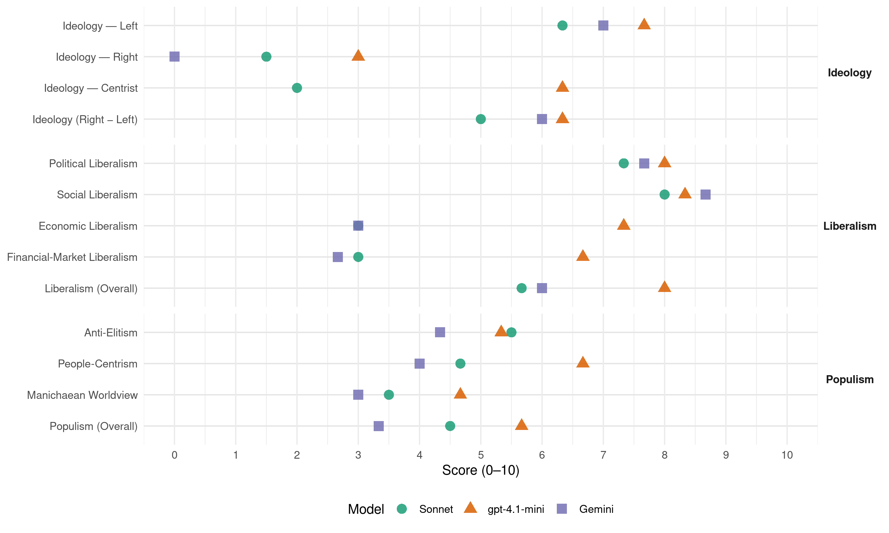

PvdA (Netherlands, 2012)
manifesto_id 22320_201209
Get full text: This site shows derived annotations and short verbatim quotes only. The full manifesto text is © Manifesto Project / WZB — obtain it via manifesto-project.wzb.eu using the manifesto_id above.
Headline scores
| Dimension | Sonnet | gpt-4.1-mini | Gemini |
|---|---|---|---|
| Populism (Overall) | 4.5 | 5.7 | 3.3 |
| Anti-Elitism | 5.5 | 5.3 | 4.3 |
| People-Centrism | 4.7 | 6.7 | 4.0 |
| Manichaean Worldview | 3.5 | 4.7 | 3.0 |
| Ideology (Right − Left) | 5.0 | 6.3 | 6.0 |
| Liberalism (Overall) | 5.7 | 8.0 | 6.0 |
| Political Liberalism | 7.3 | 8.0 | 7.7 |
| Social Liberalism | 8.0 | 8.3 | 8.7 |
| Economic Liberalism | 3.0 | 7.3 | 3.0 |
| Financial-Market Liberalism | 3.0 | 6.7 | 2.7 |
Evidence per dimension
Economic Liberalism
Gemini · score 5.0 · mixed · chunk 1
“Winkelsluitingstijdenwet wordt veel ruimer”
De Winkelsluitingstijdenwet wordt veel ruimer. Het is aan gemeenten zelf om te bepalen dat winkels op zondag open mogen zijn.
Gemini · score 3.0 · verified · chunk 2
“We herzien het ondernemingsbestuur. Daarbij wordt de invloed van vluchtige aandeelhouders ingeperkt”
leeghalen van bedrijven door private equity-fondsen minder aantrekkelijk wordt. We herzien het ondernemingsbestuur. Daarbij wordt de invloed van vluchtige aandeelhouders ingeperkt en stimuleren we geduldig
Gemini · score 5.0 · mixed · chunk 3
“ondernemers, de motor van onze economie, de ruimte”
We geven ondernemers, de motor van onze economie, de ruimte om te ondernemen en welvaart en banen te creëren. Met fiscale investeringen
gpt-4.1-mini · score 8.0 · verified · chunk 1
“Vrije markt, concurrentie, investeringen, MKB”
Het MKB is de banenmotor van Nederland. De PvdA is trots op echte ondernemers die diensten verkopen. Die producten maken en exporteren. Die ontzettend veel werkgelegenheid bieden. Overbodige regels willen we schrappen, complexe procedures vereenvoudigen.
gpt-4.1-mini · score 7.0 · verified · chunk 2
“De PvdA wil af van de UWV route voor ontslag. Er komt een eenduidige ontslagroute via de Kantonrechter”
De PvdA wil af van de UWV route voor ontslag. Er komt een eenduidige ontslagroute via de Kantonrechter, waarbij werk nemers recht krijgen op een preventieve toets. In geval van collectief ontslag blijft het sociaal plan leidend.
gpt-4.1-mini · score 7.0 · verified · chunk 3
“We geven ondernemers, de motor van onze economie, de ruimte om te ondernemen”
We geven ondernemers, de motor van onze economie, de ruimte om te ondernemen en welvaart en banen te creëren. Met fiscale investeringen worden nieuwe bedrijfsinvesteringen en ondernemerschap aangemoedigd, in het bijzonder richting een duurzame economische ontwikkeling. Het fiscale stelsel richten we zo in dat werkgelegenheid wordt gestimuleerd.
Sonnet · score 6.0 · mixed · chunk 1
“Overbodige regels willen we schrappen”
Deze ondernemers worden gekoesterd door de PvdA. Overbodige regels willen we schrappen, complexe procedures vereenvoudigen.
Sonnet · score 3.0 · verified · chunk 2
“De marktwerking in de zorg wordt beëindigd”
Dit gaan we doen: De marktwerking in de zorg wordt beëindigd. Zorginstellingen voeren in samenwerking met burgers en werkenden in de zorg een optimaal aanbod van de zorgvoorzieningen per regio uit.
Sonnet · score 5.0 · mixed · chunk 3
“marktwerking aan banden gelegd”
In de zorg wordt concurrentie en marktwerking aan banden gelegd. De alsmaar stijgende zorgkosten moeten beter worden beheerst.
Financial-Market Liberalism
Gemini · score 3.0 · verified · chunk 1
“voeren we een belasting in op flitskapitaal”
daarom maken we een einde aan de bonuscultuur en voeren we een belasting in op flitskapitaal. We verruimen de kredietverlening
Gemini · score 2.0 · verified · chunk 2
“Via wetgeving gaan we de bonuscultuur in financiële instellingen tegen”
Er komen sancties voor bedrijven die zich niet aan deze code houden. Via wetgeving gaan we de bonuscultuur in financiële instellingen tegen, ook als er geen staatssteun wordt gegeven.
Gemini · score 3.0 · verified · chunk 3
“voeren we een belasting op financiële transacties”
De financiële sector zal moeten bijdragen in de kosten van de financiële crisis. Daartoe voeren we een belasting op financiële transacties (FTT) in. Onze pensioenfondsen worden hier
gpt-4.1-mini · score 7.0 · verified · chunk 1
“Europese bankentoezicht, kapitaalseisen voor banken”
Er moet Europees bankentoezicht komen. Banken in de Eurozone moeten allen voldoende gekapitaliseerd zijn en onder effectief toezicht staan. Kapitaalseisen voor banken moeten worden verhoogd. Nederland moet net als Zwitserland en Engeland, aanvullende eisen stellen.
gpt-4.1-mini · score 6.0 · verified · chunk 2
“De PvdA streeft in Europees verband naar het ontmoedigen van flitskapitaal, door een heffing op financiële transacties”
De PvdA streeft in Europees verband naar het ontmoedigen van flitskapitaal, door een heffing op financiële transacties. Onze pensioenfondsen worden hier nadrukkelijk van uitgezonderd.
gpt-4.1-mini · score 7.0 · verified · chunk 3
“De banken dragen bij aan de kosten van de crisis; de bankenbelasting wordt verhoogd”
De financiële sector wordt geherstructureerd. De banken dragen bij aan de kosten van de crisis; de bankenbelasting wordt verhoogd. Om roekeloos flitskapitaal aan te pakken zetten sociaaldemocraten in heel Europa zich in voor een heffing op financiële transacties. Pensioenfondsen worden hiervan uitgezonderd.
Sonnet · score 4.0 · mixed · chunk 1
“belasting in op flitskapitaal”
maken we een einde aan de bonuscultuur en voeren we een belasting in op flitskapitaal. We verruimen de kredietverlening aan bedrijven
Sonnet · score 3.0 · verified · chunk 2
“heffing op financiële transacties”
De PvdA streeft in Europees verband naar het ontmoedigen van flitskapitaal, door een heffing op financiële transacties. Onze pensioenfondsen worden hier nadrukkelijk van uitgezonderd.
Sonnet · score 3.0 · verified · chunk 3
“belasting op financiële transacties (FTT) in”
De financiële sector zal moeten bijdragen in de kosten van de financiële crisis. Daartoe voeren we een belasting op financiële transacties (FTT) in. Onze pensioenfondsen worden hier nadrukkelijk van uitgezonderd.
Political Liberalism
Gemini · score 7.0 · verified · chunk 1
“vrijheid van onderwijs niet kan betekenen”
zodat vrijheid van onderwijs niet kan betekenen vrijheid van slecht onderwijs en slechte school
Gemini · score 8.0 · verified · chunk 2
“seksuele geaardheid toe aan de lijst van kenmerken van mensen waarop je niet ongelijk mag worden behandeld”
In artikel 1 van de grondwet voegen we seksuele geaardheid toe aan de lijst van kenmerken van mensen waarop je niet ongelijk mag worden behandeld. Geen enkele school mag leerlingen en leraren
Gemini · score 8.0 · verified · chunk 3
“mensenrechten, rechtsstaat en democratie”
Europa is meer dan alleen één markt. Het is ook een waardengemeenschap die staat voor mensenrechten, rechtsstaat en democratie. Die waarden moeten altijd doorklinken in het buitenlands
gpt-4.1-mini · score 8.0 · verified · chunk 1
“Democratie, rechten, verkiezingen, parlement”
Het onderwijs staat onder begrijpelijke druk om het nóg beter te doen. Dat vergt voldoende onderwijstijd van goede leraren die de ruimte krijgen maatwerk te bieden. Kwaliteit van onderwijs vraagt voortdurende aandacht. Er is aangetoond dat een docent voor 80% de onderwijskwaliteit bepaalt.
gpt-4.1-mini · score 8.0 · verified · chunk 2
“De rechter blijft voor iedereen toegankelijk. De dikte van je portemonnee mag niet bepalend zijn”
De rechter blijft voor iedereen toegankelijk. De dikte van je portemonnee mag niet bepalend zijn of je je recht kunt halen. Daarom moeten griffierechten voor iedereen betaalbaar blijven en rechtsbijstand beschikbaar zijn, ook voor iedereen die dat zelf niet kan betalen.
gpt-4.1-mini · score 8.0 · verified · chunk 3
“De PvdA streeft naar een sterke samenleving en een sterke democratie”
De PvdA streeft naar een sterke samenleving en een sterke democratie, waarin burgers en gemeenschappen mede vorm geven aan de publieke zaak en waarin burgers daadwerkelijk invloed kunnen uitoefenen op het bestuur. Democratie moet onderhouden worden. Enerzijds door het te leren, op school en in verenigingsverband, anderzijds door de democratische instituties tijdig aan te passen aan zich wijzigende omstandigheden.
Sonnet · score 7.0 · verified · chunk 1
“ontslagroute via de Kantonrechter”
Er komt een eenduidige ontslagroute via de Kantonrechter, waarbij werknemers recht krijgen op een preventieve toets.
Sonnet · score 7.0 · verified · chunk 2
“Grondrechten van burgers worden hierbij gerespecteerd”
Digitaal veiligheidsbeleid mag geen vals gevoel van veiligheid geven, maar moet op basis van dreigings- en risicoanalyses vormgegeven worden. Grondrechten van burgers worden hierbij gerespecteerd.
Sonnet · score 8.0 · verified · chunk 3
“democratische controle te versterken”
Willen we onze toekomst bouwen in een Europa waar meer en beter wordt samengewerkt, dan is het hoog tijd om de democratische controle te versterken. Een stem bij de Europese verkiezingen moet veel meer dan nu echt betekenis krijgen.
Liberalism (Overall)
Gemini · score 6.0 · verified · chunk 1
“Winkelsluitingstijdenwet wordt veel ruimer”
De Winkelsluitingstijdenwet wordt veel ruimer. Het is aan gemeenten zelf om te bepalen dat winkels op zondag open mogen zijn.
Gemini · score 6.0 · verified · chunk 2
“Sociaaldemocraten hebben altijd geknokt voor gelijke rechten en kansen voor iedereen”
emancipatie en integratie. En de PvdA wil deze kansen grijpen. Sociaaldemocraten hebben altijd geknokt voor gelijke rechten en kansen voor iedereen; voor het stemrecht voor vrouwen, voor homorechten
Gemini · score 6.0 · verified · chunk 3
“mensenrechten, rechtsstaat en democratie”
Europa is meer dan alleen één markt. Het is ook een waardengemeenschap die staat voor mensenrechten, rechtsstaat en democratie. Die waarden moeten altijd doorklinken in het buitenlands
gpt-4.1-mini · score 8.0 · verified · chunk 1
“Investeren in onderwijs, gezonde financiële sector”
Een goed opgeleide bevolking is essentieel voor hernieuwde economische groei. Investeren in onderwijs is investeren in de toekomst. Voor hernieuwde economische groei in Nederland is een gezonde financiële sector onmisbaar.
gpt-4.1-mini · score 8.0 · verified · chunk 2
“De rechter blijft voor iedereen toegankelijk. De dikte van je portemonnee mag niet bepalend zijn”
De rechter blijft voor iedereen toegankelijk. De dikte van je portemonnee mag niet bepalend zijn of je je recht kunt halen. Daarom moeten griffierechten voor iedereen betaalbaar blijven en rechtsbijstand beschikbaar zijn, ook voor iedereen die dat zelf niet kan betalen.
gpt-4.1-mini · score 8.0 · verified · chunk 3
“De PvdA streeft naar een sterke samenleving en een sterke democratie”
De PvdA streeft naar een sterke samenleving en een sterke democratie, waarin burgers en gemeenschappen mede vorm geven aan de publieke zaak en waarin burgers daadwerkelijk invloed kunnen uitoefenen op het bestuur. Democratie moet onderhouden worden. Enerzijds door het te leren, op school en in verenigingsverband, anderzijds door de democratische instituties tijdig aan te passen aan zich wijzigende omstandigheden.
Sonnet · score 6.0 · verified · chunk 1
“degelijke financiële sector en een hoogwaardige”
Een land dat zijn kracht ontleent aan het beste onderwijs, fatsoenlijke werkomstandigheden, een degelijke financiële sector en een hoogwaardige infrastructuur.
Sonnet · score 5.0 · verified · chunk 2
“Discriminatie op grond van seksuele geaardheid is niet toegestaan”
Discriminatie op grond van seksuele geaardheid is niet toegestaan in Nederland. Wij stellen daarom voor dit ook zo te verankeren in de grondwet.
Sonnet · score 6.0 · verified · chunk 3
“democratische controle te versterken”
Willen we onze toekomst bouwen in een Europa waar meer en beter wordt samengewerkt, dan is het hoog tijd om de democratische controle te versterken.
Anti-Elitism
Gemini · score 6.0 · verified · chunk 1
“Een falend recept van eenzijdige bezuinigingen”
Dat is niet iets dat Nederland zomaar is overkomen. Een falend recept van eenzijdige bezuinigingen en een taboe om de noodzakelijke hervormingen door te voeren
Gemini · score 3.0 · verified · chunk 2
“Hoezeer het vorige Kabinet roet in het eten probeerde te gooien”
stabiele arbeidsmarkt als Nederland. Hoezeer het vorige Kabinet roet in het eten probeerde te gooien: we staken minder dan collega’s in de
Gemini · score 4.0 · verified · chunk 3
“Speculanten en financiële instellingen hebben met onze toekomst gespeeld”
en leidt tot krimp. Daardoor stijgen schulden verder en worden bedrijfsinvesteringen uitgesteld. Speculanten en financiële instellingen hebben met onze toekomst gespeeld door onaanvaardbare risico’s te nemen. Alleen Europa kan, in internationale samenwerking
gpt-4.1-mini · score 7.0 · verified · chunk 1
“Een falend recept van eenzijdige bezuinigingen”
Dat is niet iets dat Nederland zomaar is overkomen. Een falend recept van eenzijdige bezuinigingen en een taboe om de noodzakelijke hervormingen door te voeren heeft ons land doen afglijden.
gpt-4.1-mini · score 7.0 · verified · chunk 2
“Kortzichtig aandeelhouderskapitalisme, dat hebzucht tot norm heeft verheven”
Van even groot belang voor de sociale rust is dat we de orde in de zakenwereld herstellen. Kortzichtig aandeelhouderskapitalisme, dat hebzucht tot norm heeft verheven, heeft onze economie grote schade toegebracht. Dat geldt ook voor te grote verschillen in beloning en hoge bonussen.
gpt-4.1-mini · score 2.0 · verified · chunk 3
“Speculanten en financiële instellingen hebben met onze toekomst gespeeld”
De eenzijdige bezuinigingsdrift in heel Europa bedreigt de banen en koopkracht van werknemers, zelfstandigen en gepensioneerden en leidt tot krimp. Daardoor stijgen schulden verder en worden bedrijfsinvesteringen uitgesteld. Speculanten en financiële instellingen hebben met onze toekomst gespeeld door onaanvaardbare risico’s te nemen. Alleen Europa kan, in internationale samenwerking, de financiële markten weer beteugelen.
Sonnet · score 5.0 · mixed · chunk 1
“falend recept van eenzijdige bezuinigingen”
Een falend recept van eenzijdige bezuinigingen en een taboe om de noodzakelijke hervormingen door te voeren heeft ons land doen afglijden.
Sonnet · score 6.0 · verified · chunk 2
“Kortzichtig aandeelhouderskapitalisme, dat hebzucht tot norm heeft verheven”
Van even groot belang voor de sociale rust is dat we de orde in de zakenwereld herstellen. Kortzichtig aandeelhouderskapitalisme, dat hebzucht tot norm heeft verheven, heeft onze economie grote schade toegebracht.
Sonnet · score 5.0 · verified · chunk 3
“Speculanten en financiële instellingen hebben met onze toekomst gespeeld”
Speculanten en financiële instellingen hebben met onze toekomst gespeeld door onaanvaardbare risico’s te nemen. Alleen Europa kan, in internationale samenwerking, de financiële markten weer beteugelen.
Ideology — Centrist
gpt-4.1-mini · score 7.0 · verified · chunk 1
“Een open samenleving vol kansen voor onze kinderen”
Het is onze ambitie een open samenleving vol kansen voor onze kinderen achter te laten. Een samenleving waarin we meer zijn dan een verzameling individuen.
gpt-4.1-mini · score 6.0 · verified · chunk 2
“Iedereen hoort erbij. Iedereen moet ook naar vermogen meedoen en bijdragen”
Iedereen heeft recht op eerlijke kansen. Daar staat de PvdA voor. Of dit nou minderheden, homo’s, kinderen, ouderen, mensen met een beperking of mensen in een kwetsbare positie door afhankelijkheidsrelaties of schulden zijn. De PvdA zet zich ervoor in dat iedereen mee kan doen. En iedereen moet ook naar vermogen meedoen en bijdragen. Die wederkerigheid is nodig om onze samenleving sterk en sociaal te houden.
gpt-4.1-mini · score 6.0 · verified · chunk 3
“De PvdA wil beter aansluiten bij deze burgerkracht”
De PvdA wil beter aansluiten bij deze burgerkracht, door de hardnekkige verkokering van de voorzieningen van de verzorgingsstaat aan te pakken en door burgers een grotere rol te geven in de ontwikkeling en uitvoering van beleid. Mensen en hun sociale netwerken bedenken vaak eigen oplossingen voor problemen en zijn in hoge mate bereid elkaar onderling te helpen.
Sonnet · score 2.0 · verified · chunk 1
“groei, nieuwe investeringen en meer banen”
agenda die groei, nieuwe investeringen en meer banen in evenwicht brengt met verstandig en eerlijk sociaal economisch beleid
Sonnet · score 2.0 · mixed · chunk 2
“Iedereen moet de kans krijgen om mee te doen”
In Nederland telt iedereen mee, los van afkomst, religie, etniciteit of seksuele geaardheid. Iedereen moet de kans krijgen om mee te doen.
Ideology — Left
Gemini · score 7.0 · verified · chunk 1
“lasten van onze publieke voorzieningen eerlijk worden gedeeld”
We zorgen er ook voor dat de lasten van onze publieke voorzieningen eerlijk worden gedeeld en vragen in krappe economische tijden van de sterkste schouders
Gemini · score 7.0 · verified · chunk 2
“Kortzichtig aandeelhouderskapitalisme, dat hebzucht tot norm heeft verheven”
belang voor de sociale rust is dat we de orde in de zakenwereld herstellen. Kortzichtig aandeelhouderskapitalisme, dat hebzucht tot norm heeft verheven, heeft onze economie grote schade toegebracht.
Gemini · score 7.0 · verified · chunk 3
“Eerlijk delen van kennis, macht en inkomen”
Toekomst van ontwikkelingssamenwerking Eerlijk delen van kennis, macht en inkomen vormt de kern van de sociaaldemocratie. Of je wieg
gpt-4.1-mini · score 8.0 · verified · chunk 1
“We voeren een belasting in op flitskapitaal”
Daarom maken we een einde aan de bonuscultuur en voeren we een belasting in op flitskapitaal. We verruimen de kredietverlening aan bedrijven, met name aan het MKB, maken investeringen door bedrijven aantrekkelijker te maken en vergroten de publieke private investeringen met hulp van onze pensioenfondsen.
gpt-4.1-mini · score 8.0 · verified · chunk 2
“Er komt een wijziging van het belastingstelsel waardoor ontwijkconstructies in de toekomst uitgesloten worden”
Kortzichtig aandeelhouderskapitalisme, dat hebzucht tot norm heeft verheven, heeft onze economie grote schade toegebracht. Dat geldt ook voor te grote verschillen in beloning en hoge bonussen. Er komt een wijziging van het belastingstelsel waardoor ontwijkconstructies in de toekomst uitgesloten worden. En multinationals gaan geleidelijk aan een redelijke belasting betalen over hun winsten.
gpt-4.1-mini · score 7.0 · verified · chunk 3
“We delen eerlijk, de sterkste schouders dragen de zwaarste lasten”
Aan het einde van deze Kabinetsperiode zal er weer zicht zijn op een structureel evenwicht op de begroting. Dat vergt wel behoedzaamheid. Nu de Nederlandse economie in een recessie verkeert en de werkloosheid per maand verder oploopt, komt het aan op een goede maatvoering teneinde de economie de gelegenheid te geven te herstellen en vertrouwen te scheppen waaruit nieuwe economische groei kan voortkomen. We delen eerlijk, de sterkste schouders dragen de zwaarste lasten.
Sonnet · score 6.0 · verified · chunk 1
“eerlijke verdeling van de rekening tussen burgers”
Een eerlijke verdeling van de rekening tussen burgers naar draagkracht. Structurele aanpassingen van woningmarkt, arbeidsmarkt en de zorg
Sonnet · score 7.0 · verified · chunk 2
“te grote verschillen in beloning en hoge bonussen”
Dat geldt ook voor te grote verschillen in beloning en hoge bonussen. Er komt een wijziging van het belastingstelsel waardoor ontwijkconstructies in de toekomst uitgesloten worden.
Sonnet · score 6.0 · verified · chunk 3
“banken en bonussen beteugelen”
Nu geeft het ons de kans om samen een vuist te maken tegen het snelle geld en tegen kortzichtige speculatie zonder oog voor maatschappelijke gevolgen. Samen kunnen we de banken en bonussen beteugelen en van Europa weer een hoopvol project maken.
Ideology (Right − Left)
Gemini · score 6.0 · verified · chunk 1
“lasten van onze publieke voorzieningen eerlijk worden gedeeld”
We zorgen er ook voor dat de lasten van onze publieke voorzieningen eerlijk worden gedeeld en vragen in krappe economische tijden van de sterkste schouders
Gemini · score 6.0 · verified · chunk 2
“Kortzichtig aandeelhouderskapitalisme, dat hebzucht tot norm heeft verheven”
belang voor de sociale rust is dat we de orde in de zakenwereld herstellen. Kortzichtig aandeelhouderskapitalisme, dat hebzucht tot norm heeft verheven, heeft onze economie grote schade toegebracht.
Gemini · score 6.0 · verified · chunk 3
“Eerlijk delen van kennis, macht en inkomen”
Toekomst van ontwikkelingssamenwerking Eerlijk delen van kennis, macht en inkomen vormt de kern van de sociaaldemocratie. Of je wieg
gpt-4.1-mini · score 7.0 · verified · chunk 1
“Een alternatief dat Nederland sterker en socialer maakt”
De PvdA heeft gekozen. Voor een alternatief dat Nederland sterker en socialer maakt. Een alternatief waarbij we al het talent benutten dat ons land rijk is.
gpt-4.1-mini · score 7.0 · verified · chunk 2
“Kortzichtig aandeelhouderskapitalisme, dat hebzucht tot norm heeft verheven”
Van even groot belang voor de sociale rust is dat we de orde in de zakenwereld herstellen. Kortzichtig aandeelhouderskapitalisme, dat hebzucht tot norm heeft verheven, heeft onze economie grote schade toegebracht. Dat geldt ook voor te grote verschillen in beloning en hoge bonussen.
gpt-4.1-mini · score 5.0 · verified · chunk 3
“Speculanten en financiële instellingen hebben met onze toekomst gespeeld”
De eenzijdige bezuinigingsdrift in heel Europa bedreigt de banen en koopkracht van werknemers, zelfstandigen en gepensioneerden en leidt tot krimp. Daardoor stijgen schulden verder en worden bedrijfsinvesteringen uitgesteld. Speculanten en financiële instellingen hebben met onze toekomst gespeeld door onaanvaardbare risico’s te nemen. Alleen Europa kan, in internationale samenwerking, de financiële markten weer beteugelen.
Sonnet · score 4.0 · verified · chunk 1
“sterker en socialer Nederland”
De PvdA heeft gekozen. Voor een alternatief dat Nederland sterker en socialer maakt.
Sonnet · score 6.0 · verified · chunk 2
“te grote verschillen in beloning en hoge bonussen”
Dat geldt ook voor te grote verschillen in beloning en hoge bonussen. Er komt een wijziging van het belastingstelsel waardoor ontwijkconstructies in de toekomst uitgesloten worden.
Sonnet · score 5.0 · verified · chunk 3
“sociale rechtvaardigheid boven snelle winsten”
Een menswaardig bestaan voor iedereen begint bij een sterke en eerlijke wereldeconomie. Daarin gaat sociale rechtvaardigheid boven snelle winsten.
Ideology — Right
Gemini · score 0.0 · verified · chunk 3
“heeft een humaan asielbeleid”
acceptatie van rechten van seksuele minderheden en het bestrijden van homofobie. Nederland houdt zich aan het Vluchtelingenverdrag, mensenrechtenverdragen en EU-asielrichtlijnen en heeft een humaan asielbeleid. De situatie in het land van herkomst
gpt-4.1-mini · score 3.0 · verified · chunk 1
“Een land dat zich achter de dijken heeft verschanst”
Wordt dat een land dat zich achter de dijken heeft verschanst, waarin de overheid zich heeft teruggetrokken? Een land dat probeert de concurrentie aan te gaan op de laagste lonen, de flexibelste arbeidscontracten, de karigste publieke voorzieningen of het snelste flitskapitaal?
gpt-4.1-mini · score 3.0 · verified · chunk 2
“De PvdA wil het hele palet aan kindregelingen en kinderbijslag hervormen”
De PvdA wil het hele palet aan kindregelingen en kinderbij slag hervormen, zodat er twee regelingen overblijven. Eén gericht op het ondersteunen van de koopkracht van ouders met kinderen en één gericht op het stimuleren van participatie op de arbeidsmarkt.
gpt-4.1-mini · score 3.0 · verified · chunk 3
“Nederland stopt met de eenzijdige steun aan Israël in het Israëlisch-Palestijnse conflict”
Nederland stopt met de eenzijdige steun aan Israël in het Israëlisch-Palestijnse conflict. We gaan weer in de Europese pas lopen en gebruiken onze goede banden met zowel Israël als de Palestijnse Autoriteit beter ter ondersteuning van het vredesproces.
Sonnet · score 1.0 · verified · chunk 1
“open samenleving vol kansen”
Het is onze ambitie een open samenleving vol kansen voor onze kinderen achter te laten.
Sonnet · score 2.0 · verified · chunk 2
“selectief toelaten van arbeidsmigranten”
De PvdA is voor het selectief toelaten van arbeidsmigranten. Het openstellen van onze arbeidsmarkt voor werknemers uit nieuwe EU-lidstaten mag geen verstorende werking hebben
Manichaean Worldview
Gemini · score 4.0 · verified · chunk 1
“kortzichtig aandeelhouderskapitalisme, dat hebzucht tot norm”
die stabiliteit die onze economie juist zo schraagt. Kortzichtig aandeelhouderskapitalisme, dat hebzucht tot norm heeft verheven, heeft onze economie grote schade
Gemini · score 2.0 · verified · chunk 3
“tegen het snelle geld en tegen kortzichtige speculatie”
Europa brengt ons vrede, vrijheid en welvaart. Nu geeft het ons de kans om samen een vuist te maken tegen het snelle geld en tegen kortzichtige speculatie zonder oog voor maatschappelijke gevolgen. Samen kunnen we
gpt-4.1-mini · score 6.0 · verified · chunk 1
“Een vicieuze cirkel van bezuinigingen die investeringen en aankopen doet uitblijven”
En als het aan de vijf partijen ligt die onlangs het begrotingsakkoord 2013 sloten, draait Nederland nog een rondje extra in de vicieuze cirkel van bezuinigingen die investeringen en aankopen doet uitblijven, banen verloren doet gaan en Nederland verder weg doet zakken in de recessie.
gpt-4.1-mini · score 5.0 · verified · chunk 2
“De strijd is nooit klaar. Mensen moeten de kans krijgen op eigen kracht verder te bouwen”
Sociaaldemocraten hebben altijd geknokt voor gelijke rechten en kansen voor iedereen; voor het stemrecht voor vrouwen, voor homorechten, fundamentele burgerrechten voor iedereen. Die strijd is nooit klaar. Mensen moeten de kans krijgen op eigen kracht verder te bouwen aan het leven dat zij voor ogen hebben.
gpt-4.1-mini · score 3.0 · verified · chunk 3
“Speculanten en financiële instellingen hebben met onze toekomst gespeeld”
De eenzijdige bezuinigingsdrift in heel Europa bedreigt de banen en koopkracht van werknemers, zelfstandigen en gepensioneerden en leidt tot krimp. Daardoor stijgen schulden verder en worden bedrijfsinvesteringen uitgesteld. Speculanten en financiële instellingen hebben met onze toekomst gespeeld door onaanvaardbare risico’s te nemen. Alleen Europa kan, in internationale samenwerking, de financiële markten weer beteugelen.
Sonnet · score 4.0 · mixed · chunk 1
“falend kabinetsbeleid”
Dat is niet de schuld van het buitenland of van de wereldhandel, maar het gevolg van falend kabinetsbeleid.
Sonnet · score 4.0 · verified · chunk 2
“het vorige Kabinet roet in het eten probeerde te gooien”
Hoezeer het vorige Kabinet roet in het eten probeerde te gooien: we staken minder dan collega’s in de ons omringende landen
Sonnet · score 3.0 · verified · chunk 3
“snelle geld en tegen kortzichtige speculatie”
Europa brengt ons vrede, vrijheid en welvaart. Nu geeft het ons de kans om samen een vuist te maken tegen het snelle geld en tegen kortzichtige speculatie zonder oog voor maatschappelijke gevolgen.
People-Centrism
Gemini · score 5.0 · verified · chunk 1
“koopkracht van gewone gezinnen beter op peil”
Dat is niet alleen eerlijk, zo kunnen we ook de koopkracht van gewone gezinnen beter op peil houden. Deze toekomst staat niet op zichzelf
Gemini · score 3.0 · verified · chunk 3
“beslissingen met grote gevolgen voor doodnormale mensen”
beslissingen over financiële markten en de economie zijn politieke beslissingen, beslissingen met grote gevolgen voor doodnormale mensen in doodnormale buurten. Europa is niet alleen een verantwoordelijkheid
gpt-4.1-mini · score 8.0 · verified · chunk 1
“Een samenleving waarin we meer zijn dan een verzameling individuen”
Het is onze ambitie een open samenleving vol kansen voor onze kinderen achter te laten. Een samenleving waarin we meer zijn dan een verzameling individuen. Een land dat zijn kracht ontleent aan het beste onderwijs, fatsoenlijke werkomstandigheden, een degelijke financiële sector en een hoogwaardige infrastructuur.
gpt-4.1-mini · score 6.0 · verified · chunk 2
“Iedereen hoort erbij. Twee opeenvolgende crises in korte tijd en een Kabinet dat fors heeft bezuinigd”
Iedereen heeft recht op eerlijke kansen. Daar staat de PvdA voor. Of dit nou minderheden, homo’s, kinderen, ouderen, mensen met een beperking of mensen in een kwetsbare positie door afhankelijkheidsrelaties of schulden zijn. De PvdA zet zich ervoor in dat iedereen mee kan doen. En iedereen moet ook naar vermogen meedoen en bijdragen. Die wederkerigheid is nodig om onze samenleving sterk en sociaal te houden. Het Kabinetsbeleid van de afgelopen jaren heeft het sociaal isolement van veel mensen verergerd. Er zijn steeds meer werkende armen. Schuldenproblematiek loopt onder grote groepen verder op met soms verstrekkende gevolgen zoals dakloosheid of zelfs criminaliteit.
gpt-4.1-mini · score 6.0 · verified · chunk 3
“Mensen en hun sociale netwerken bedenken vaak eigen oplossingen”
De PvdA wil beter aansluiten bij deze burgerkracht, door de hardnekkige verkokering van de voorzieningen van de verzorgingsstaat aan te pakken en door burgers een grotere rol te geven in de ontwikkeling en uitvoering van beleid. Mensen en hun sociale netwerken bedenken vaak eigen oplossingen voor problemen en zijn in hoge mate bereid elkaar onderling te helpen.
Sonnet · score 5.0 · verified · chunk 1
“koopkracht van gewone gezinnen”
zo kunnen we ook de koopkracht van gewone gezinnen beter op peil houden. Deze toekomst staat niet op zichzelf
Sonnet · score 5.0 · verified · chunk 2
“Iedereen hoort erbij”
We hebben iedereen nodig. Iedereen hoort erbij. Twee opeenvolgende crises in korte tijd en een Kabinet dat fors heeft bezuinigd op de sociale zekerheid
Sonnet · score 4.0 · verified · chunk 3
“beslissingen niet gemaakt in achterkamertjes”
In een democratisch Europa, dat rekenschap geeft aan burgers, worden grote beslissingen niet gemaakt in achterkamertjes. De neiging om de parlementaire democratie te vervangen door technocratisch bestuur moet worden weerstaan.
Populism (Overall)
Gemini · score 5.0 · verified · chunk 1
“Een falend recept van eenzijdige bezuinigingen”
Dat is niet iets dat Nederland zomaar is overkomen. Een falend recept van eenzijdige bezuinigingen en een taboe om de noodzakelijke hervormingen door te voeren
Gemini · score 2.0 · verified · chunk 2
“Hoezeer het vorige Kabinet roet in het eten probeerde te gooien”
stabiele arbeidsmarkt als Nederland. Hoezeer het vorige Kabinet roet in het eten probeerde te gooien: we staken minder dan collega’s in de
Gemini · score 3.0 · verified · chunk 3
“tegen het snelle geld en tegen kortzichtige speculatie”
Europa brengt ons vrede, vrijheid en welvaart. Nu geeft het ons de kans om samen een vuist te maken tegen het snelle geld en tegen kortzichtige speculatie zonder oog voor maatschappelijke gevolgen. Samen kunnen we
gpt-4.1-mini · score 7.0 · verified · chunk 1
“Een falend recept van eenzijdige bezuinigingen”
Dat is niet iets dat Nederland zomaar is overkomen. Een falend recept van eenzijdige bezuinigingen en een taboe om de noodzakelijke hervormingen door te voeren heeft ons land doen afglijden.
gpt-4.1-mini · score 6.0 · verified · chunk 2
“Kortzichtig aandeelhouderskapitalisme, dat hebzucht tot norm heeft verheven”
Van even groot belang voor de sociale rust is dat we de orde in de zakenwereld herstellen. Kortzichtig aandeelhouderskapitalisme, dat hebzucht tot norm heeft verheven, heeft onze economie grote schade toegebracht. Dat geldt ook voor te grote verschillen in beloning en hoge bonussen.
gpt-4.1-mini · score 4.0 · verified · chunk 3
“Speculanten en financiële instellingen hebben met onze toekomst gespeeld”
De eenzijdige bezuinigingsdrift in heel Europa bedreigt de banen en koopkracht van werknemers, zelfstandigen en gepensioneerden en leidt tot krimp. Daardoor stijgen schulden verder en worden bedrijfsinvesteringen uitgesteld. Speculanten en financiële instellingen hebben met onze toekomst gespeeld door onaanvaardbare risico’s te nemen. Alleen Europa kan, in internationale samenwerking, de financiële markten weer beteugelen.
Sonnet · score 4.0 · mixed · chunk 1
“vijf partijen ligt die onlangs het begrotingsakkoord”
als het aan de vijf partijen ligt die onlangs het begrotingsakkoord 2013 sloten, draait Nederland nog een rondje extra in de vicieuze cirkel
Sonnet · score 5.0 · verified · chunk 2
“Kortzichtig aandeelhouderskapitalisme, dat hebzucht tot norm heeft verheven”
Van even groot belang voor de sociale rust is dat we de orde in de zakenwereld herstellen. Kortzichtig aandeelhouderskapitalisme, dat hebzucht tot norm heeft verheven, heeft onze economie grote schade toegebracht.
Sonnet · score 4.0 · verified · chunk 3
“samen een vuist te maken tegen het snelle geld”
Nu geeft het ons de kans om samen een vuist te maken tegen het snelle geld en tegen kortzichtige speculatie zonder oog voor maatschappelijke gevolgen. Samen kunnen we de banken en bonussen beteugelen.
Social Liberalism